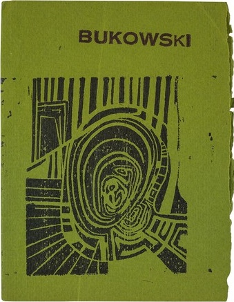

3:10 · 1 OPERA
Charles Bukowski, Il genio della massa.
Il filo del discorso
Lettura in inglese del componimento di Charles Bukowski presentato dal titolo come Il genio della massa. La voce mette in guardia dalla distanza fra la predicazione di amore e pace e la violenza che può abitare le persone comuni. La critica si concentra sul bisogno della folla, sull’incapacità di stare soli e sull’ostilità verso chi crea o vive diversamente. Il finale della trascrizione automatica è deformato e non permette di ricostruire con precisione tutti i versi conclusivi.
I libri nel discorso

Il genio della massa
Copertina: 7 Flowers Press, 1966 · The Genius of the Crowd, edizione autonoma
Fotografia del piatto anteriore dell’edizione autonoma inglese The Genius of the Crowd, illustrata da Paula Marie Savarino e pubblicata da 7 Flowers Press nel 1966. ISBN non riportato nelle fonti. Il titolo è confermato nel frontespizio affiancato alla copertina nella fotografia originale del catalogo antiquario. Non è un’edizione identificata nel video.
Recitazione inglese riconoscibile dall’incipit; titolo italiano e autore riportati nei metadati del filmato.
Passaggio 0:04 ↗ · Fonti e libro ↗